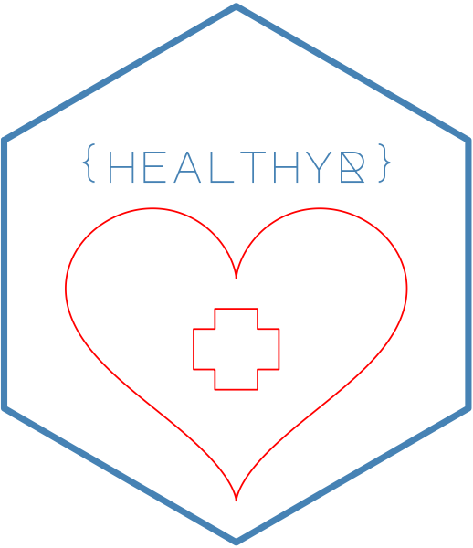
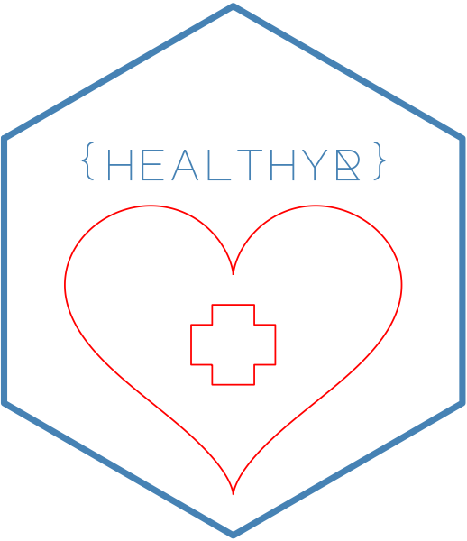
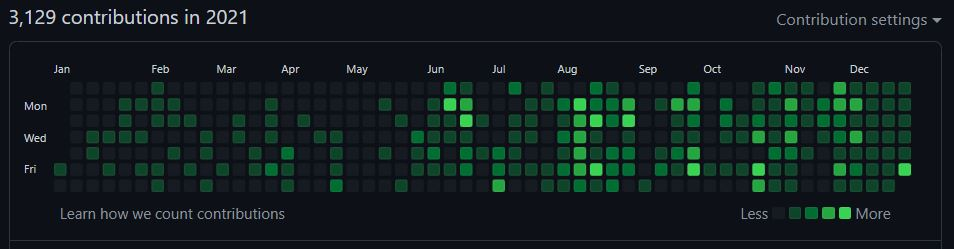

A Review of 2021
Steven P Sanderson II, MPH
04 January, 2022
 
 


2021 A Year in Review
The year 2021 was a big year for me. I did a lot of coding, a lot more than I typically do. The biggest push came personally in my ongoing development of my R packages that are in the healthyverse. To use the healthyverse simply do so in the familiar fashion:
install.packages("healthyverse")
library(healthyverse)In order to start looking at some of the data that pertains to 2021 lets first get the data from the CRAN logs. Since I do this daily already, I can simply use the rds file I already have. I am going to go through the motions though, in case others might want to do something similar. The functions I am using to get the data can be found here
Now lets get that data!
library(tidyverse)
library(lubridate)
source("01_scripts/get_data_functions.R")
source("01_scripts/data_manipulation_functions.R")
get_cran_data()
get_package_release_data()
csv_to_rds()Ok now that we have our data, lets ensure that we are only using the year 2021. We can do this by filtering out data by time with the timetk package.
Now lets filter our data below, some pre-processing may need to take place.
library(timetk)
data_tbl <- downloads_processed_tbl() %>%
filter_by_time(
.date_var = date,
.start_date = "2021",
.end_date = "2021"
)
glimpse(data_tbl)## Rows: 24,887
## Columns: 11
## $ date <date> 2021-01-01, 2021-01-01, 2021-01-01, 2021-01-01, 2021-01-01,~
## $ time <Period> 3H 41M 37S, 3H 42M 2S, 10H 1M 57S, 10H 1M 57S, 10H 1M 57S~
## $ date_time <dttm> 2021-01-01 03:41:37, 2021-01-01 03:42:02, 2021-01-01 10:01:~
## $ size <int> 2910045, 5668471, 533, 5669257, 81738, 5668465, 530, 14701, ~
## $ r_version <chr> "4.0.3", "3.6.0", NA, NA, NA, NA, NA, NA, NA, NA, NA, NA, NA~
## $ r_arch <chr> "x86_64", "x86_64", NA, NA, NA, NA, NA, NA, NA, NA, NA, NA, ~
## $ r_os <chr> "mingw32", "mingw32", NA, NA, NA, NA, NA, NA, NA, NA, NA, NA~
## $ package <chr> "healthyR", "healthyR.data", "healthyR.data", "healthyR.data~
## $ version <chr> "0.1.1", "1.0.0", "1.0.0", "1.0.0", "1.0.0", "1.0.0", "1.0.0~
## $ country <chr> "GH", "GH", "US", "US", "US", "US", "US", "US", "US", "US", ~
## $ ip_id <int> 220, 220, 8154, 8154, 8154, 8154, 8154, 8154, 8154, 8154, 81~Now that we have our data, we have it for the year 2021 only with a start date of 2021-01-01 and an end date of 2021-12-31
GitHub Stats
Now lets take a look at some quick stats from my GitHub
First my contribution grid:

Secondly my badge: